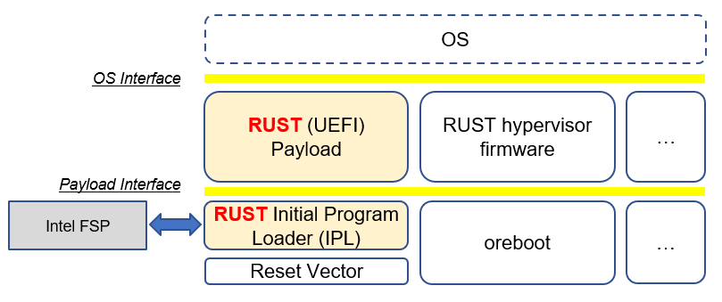
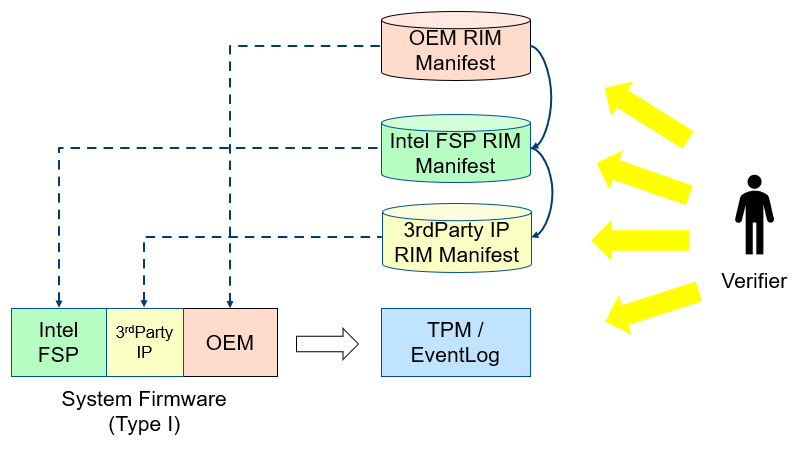
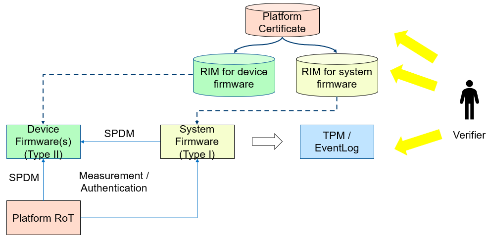

5. Security¶
5.1. Security Overview¶
There are various security considerations for the POL, sFSP, and the payloads. This section will describe the various overall concerns and technology specific aspects.
5.1.1. Firmware Resiliency - Protection¶
5.1.1.1. Critical Resource Lock (hardware)¶
The platform shall always lock the important resource before it exits the platform manufacture phase.
The important resource includes but is not limited to flash part, SMRAM, SMRR, silicon register such as lockable BAR register,
5.1.1.2. Critical Service Close (software)¶
The platform shall always close the service that may impact the system resource.
The service includes but is not limited to SMM registration service, flash update service.
5.1.1.3. Critical Resource Access¶
The platform shall only allow the critical resource access in the trusted execution environment such as SMM.
5.1.1.4. Update¶
The platform shall only allow firmware update only in the trusted execution environment such as SMM, or before existing the platform manufacture phase.
The update must check the secure version number to prevent rollback.
5.1.2. Firmware Resiliency - Detection¶
5.1.2.1. Secure Boot (verified boot)¶
The platform shall enable secure boot. The early boot component shall verify the next component.
Care must be taken for Time-of-check/Time-of-use (TOC/TOU) attack.
The early component shall copy the next component to a trusted execution environment, verify and use.
Please refer to Understanding the UEFI Secure Boot Chain
5.1.2.2. Secure Configuration (data verification)¶
If the configuration has security property, such as lock/unlock policy. It shall be protected and verified.
The secure configuration may be treated as code and verified together with secure boot.
Or the secure configuration may be protected by the variable enhancement, such as RPMB or RPMC.
5.1.3. Firmware Resiliency - Recovery¶
5.1.3.1. Recovery trigger¶
A platform should have a watchdog to auto trigger recovery process automatically. Otherwise, it should notify the end user that a manual recovery is required.
5.1.3.2. Known good image¶
The recovery process may load a known good image. The known good image itself shall be protected and follow the detection flow.
The known good image shall be up to date as well, to resist rollback attack – recovery to an old known bad image.
5.1.4. Measurment and Attestation¶
5.1.4.1. OEM Component Measurement¶
The platform shall follow TCG PC Client Platform Firmware Profile if TPM-based measured boot is enabled. The early boot component shall measure the next component before transfer control to it, to create a trust chain.
Please refer to Understanding the Trusted Boot Chain Implementation
The platform shall follow TCG specification to measure all required component. For example, the platform shall measure every boot component. The platform shall measure any security-related boot configuration.
5.1.4.2. FSP Measurement¶
The platform shall follow FSP measurement and attestation to record the measurement for FSP binary.
5.1.4.3. Device Measurement¶
The platform shall follow DMTF Security Protocol and Data Model (SPDM) Specification to record the measurement for the devices.
5.1.4.4. Universal Payload Measurement¶
The platform shall create a standalone event log for the universal payload.
Component
PCR
Event Type
Event Data
Event Log
UniversalPayload binary
0 (if it is part of OEM binary) or 2 (if it is treated as second phase loader)
EV_EFI_PLATFORM_FIRMWARE_BLOB2
UniversalPayload binary
EFI_PLATFORM_FIRMWARE_BLOB2 structure (descriptor: “UniversalPayload”)
5.1.5. DMA Protection¶
The platform shall enable IOMMU based DMA protection.
For example, Using IOMMU for DMA Protection in UEFI Firmware.
5.1.6. Cryptography Agility¶
A firmware infrastructure shall allow the implementation to choose different cryptographic algorithms, to compliant with different standards. This is called Cryptography agility. TPM2.0 standard is a good example. A TPM2.0 device may support SHA256, SHA384, SM3_256, or future algorithms such as SHA3_256 or SHA3_384.
Below table shows the supported crypto algorithms.
Standard
Supported Algorithm
TCG - EFI Protocol
SHA1/SHA-{256,384,512}/SM3
IETF - TLS 1.3
TLS Cipher Suite – for negotiation
DMTF - SPDM 1.1
RSA{SSA,PSS}_{2048,3072,4096}/ECDSA_P{256,384,521}+{SHA,SHA3}_{256,384,512}
RSASSA_3072/ECDSA_P{256,384} + SHA{256,384}
UEFI - UEFI 2.9
RSA2048 (PKCS1_1.5) + SHA256
Below table shows the minimal requirement.
Standard
Minimal Requirement
Commercial National Security Algorithm Suite (CNSA Suite Guide)
SHA384, RSAPSS_3072/ECDSA_P384
SHA256/SM3, RSA_2048/SM2, ECDSA_256/SM2
ARM Trusted Board Boot Requirements Client (TBBR-CLIENT) for A profile
AES_128, SHA256, ECDSA_256 (RSAPSS_2048)
ARM Platform Security Architecture (PSA) Trusted Base System Architecture (TBSA) for M profile
AES_128, SHA256, ECDSA_256, RSA_3072
SHA384, RSAPSS_3072/ECDSA_P384
Below table shows the algorithm usage.
Feature
Algorithm
RSA 8192 + SHA512
ECDSA (512 bit) + SHA512
RSA 2048 + SHA256
A firmware should start considering Post Quantum Cryptography Algorithm. In 2019, NIST Stateful Hash-Based Signatures (HBS) projects published NIST SP 800-208 for the image signing in secure boot and secure update use case. In 2022, NIST Post Quantum Cryptography (PQC) projects announced the Selected Algorithms 2022 for general purpose digital signature and Public-key Encryption / Key-establishment. In 2022, NSA released the Commercial National Security Algorithm Suite 2.0 (CNSA 2.0) Cybersecurity Advisory (CSA), which includes the quantum resistant algorithms.
Below table shows the post quantum algorithms.
Usage
Algorithm
Specification
Approved by
Image Signing (secure boot, secure update)
Leighton-Micali Signature (LMS) - RFC8554
NIST, NSA
Image Signing (secure boot, secure update)
Xtended Merkle Signature Scheme (XMSS) - RFC8391
NIST, NSA
Public-key Encryption and Key-establishment
TBD
NIST, NSA
General Purpose Digital Signature
TBD
NIST, NSA
General Purpose Digital Signature
TBD
NIST
General Purpose Digital Signature
TBD
NIST
The firmware related timeline would be:
Software and Firmware Signing: prefer CNSA 2.0 by 2025, exclusively use by 2030.
Web browsers/servers and cloud services: prefer CNSA 2.0 by 2025, exclusively use by 2033.
A firmware infrastructure shall consider crypto-agile support for two purposes:
To support more industry standard cryptographic algorithms, which may be used in some firmware implementation, such as SHA3, SM3, SM2, etc.
To support quantum safe cryptographic algorithm and hybrid mode, such as XMSS or LMS digital signature algorithm, etc.
5.2. Vulnerability Mitigation Strategy¶
The platform should make the attacker difficult to find, exploit and leverage the vulnerabilities.
Tactics
Method
Example
Eliminate Vulnerability
Reduce Attack Surface. Dont Use Weak Cryptography Algorithm. Use Type Safe Programming Language.
Remove Unnecessary Interface, such as SMI handler, UEFI variable. Adopt Firmware Security Best Practice. Consider Side Channel Attack. Cryptography Agility. Use Rust.
Break Exploitation
Data Execution Prevention. Control Flow Guard. Address Space Layout Randomization. Secure Boot.
Non-executable Data Page. Read-only code page. Stack Cookie. Intel CET. ASLR in DXE/SMM.
Contain Damage
Deprevilege
Ring-3 Option ROM. Ring-3 OEM SMM.
Limit Attack Window
Firmware Resiliency. Measurement and Attestation.
Live Patching Runtime Component. Firmware Component Manifest.
5.2.1. Eliminate Vulnerability¶
First, a platform should try to remove any attack surfaces and eliminate the potential vulnerablity.
5.2.1.1. Minimize SMI handler¶
In a system firmware, the SMI Handler is the most critical attack surface, because the SMM code has highest privilege. A platform should use SMI Handler Profile to evaluate if the exposed SMI handlers are necessary.
5.2.1.2. Minimize UEFI variable¶
Every UEFI variable is an attack surface, because the attacker can use UEFI API to modify it. A platform should review all UEFI variable and evaluate if it is really needed.
5.2.1.3. Adopt Firmware Security Best Practice¶
The platform should follow the existing firmware security best practice, such as EDKII Secure Design Guide, EDKII Secure Coding Guide, EDKII Secure Code Review Guide.
Other EDKII security related document can be found at EDKII Security White Papers.
5.2.1.4. Consider Side Channel Mitigation¶
A platform shall follow Host Firmware Speculative Execution Side Channel Mitigation.
LFENCE after validation of untrusted data but before use
RSB stuffing before RSM
5.2.1.5. Type Safe Programming Language¶
An analysis has found that 50% of the open source BIOS security bugs are due to buffer overflows and integer overflows. There are a variety of tools and techniques to prevent these bugs, by identifying and eliminating the vulnerability or by ensuring the vulnerability is not exploitable. Alternatively, instead of providing an ever-increasing set of guidance and tools to address these bugs, we could seek ways to avoid introducing the bugs in the first place. An emerging approach is to use memory-safe programming languages.
Rust is a promising new programming language that can eliminate memory safety issues at compile time. Engineers at Microsoft have made a case for using memory-safe languages like Rust. A number of firmware and embedded projects are embracing Rust, including oreboot system firmware, RISC-V rustsbi and tock embedded OS. Rust also supports UEFI toolchains, x86-64-unknown-uefi and i686-unknown-uefi, which can be used to generate a UEFI executable directly. There are UEFI related Rust projects including r-efi and uefi-rs.
EDKII firmware may use Rust to build a component with RustPkg. A lightweight pure rust-firmware is also possible to boot the system with Intel FSP.
{kind=link}
Figure 14 A pure Rust-firmware
Experimentation so far has shown that, with compile-time checking, Rust can eliminate uninitialized variable, use after free, and double free vulnerabilities. With runtime checking, Rust can help break exploitation of memory boundary check and integer overflow check issues.
In addition to memory safety benefits, Rust also has good software engineering tools support and is interoperable with C. With Rust, developers can easily generate documents (cargo doc), perform unit tests (cargo test), fix coding style issues (cargo fmt), do static analysis (cargo clippy), and more. All those tools are integrated into the Rust cargo package manager. Rust can even get faster performance than C because the code can be determined at compile time, saving time at runtime execution.
5.2.2. Break Exploitation¶
If a platform may contain the vulnerablities, the platform should adopt defence in deptch to break the exploitation. Memory Protection in UEFI BIOS, Mitigate Buffer Overflow in UEFI, Secure SMM Communication, and CET in SMM provides guideline on how to mitigate those threats.
5.2.2.1. Data Execution Prevention (DEP)¶
A platform should set data memory to be non-executable and code memory to be read-only. As such, the data page (including stack, heap, global data, and usable memory) cannot be executed. It is an efficient way to prevent code injection.
5.2.2.2. Control Flow Guard (CFG)¶
Control flow attack is feasiable even if the DEP is enabled. A platform may enable compiler feature (stack cookie) or use the CPU feature such as Intel Control Flow Enforcement Technology (CET) to guard the control flow.
5.2.2.3. Address Space Layout Randomization (ASLR)¶
ASLR is makes it more difficult for an attacker to predict target addresses even if there is vulnerability in the program. The randomization technology can include shuffling, most likely for the image, or shifting, most likely for the data.
5.2.3. Contain Damage¶
If a platform does not have an efficient way to break the exploitation, the platform may consider to limit the damage in a small scope.
5.2.3.1. Deprevilege Execution¶
By default, the system firwmare execution environment is in ring-0. Platform may run untrusted component in a deprevileged environment ring-3.
For example, the UEFI firmware can run 3rd party option ROM in ring-3, a small SMM CPU code can run the OEM SMM driver in ring-3, etc.
If the vulnerabilities in option ROM or OEM SMM code are exploited, the damage will only be in the ring-3 component and will not impact the system.
5.2.4. Limit Attack Window¶
If a platform really has vulnerablity escaping from all defense and impact the system, we need patch it platform in time.
5.2.4.1. Live Patching¶
Live patching is trend in the industry. For example, Linux kernel implemented live patching of a running kernel.
The system firmware may consider using similar mechanims to patch the runtime component if there is.
5.2.4.2. Firmware Component Manifest¶
Before a firmware patch is deployed, an adiminstrator may need to know how many systems are impacted.
A platform may include many firmware components, which are from different sources. Now we need a way to collect those information. We define 2 category of firmwares in below table
Type
Sub-Type
Loader (Loaded/Measured/Authenticated by)
Location (Loaded from)
Execution Environment (Executed in)
Example
Type-I
I-A
Host
System Firmware
Host
BIOS, Intel FSP, CPU Microcode
Type-I
I-B
Host
Peripheral Device
Host
PCI Option ROM
Type-II
II-A
Non-Host
Non-Host Firmware
Non-Host
BMC, EC, Intel CSME
Type-II
II-B
Peripheral Device
Peripheral Device
Peripheral Device
NIC, NVMe, Graphic Card
We define 2 types of firmwares:
- Type-I firmware indicates the firmware loaded, measured, authenticated in host environment.
Type-I-A indicates the one loaded from system firmware location, such as BIOS, FSP, CPU Microcode.
Type-I-B indicates the one loaded from peripheral device, such as PCI option ROM.
- Type-II firmware indicates the firmware loaded, measured, authenticated not in host environment.
Type-II-A indicates the one loaded from non-host firmware location, such as BMC, EC, Intel CSME.
Type-II-B indicates the one loaded from peripheral device, such as NIC, NVMe, Graphic Card.
For Type-I firmware, the component provider may provide a reference integrity manifest (RIM) for this specific component.
Intel FSP 2.x measurement and attesation defines a mechanism to report FSP manifest according to TCG PC Client Reference Integrity Manifest Specification. The RIM format could be SWID or CoSWID.
The universal payload should use SWID or CoSWID with below information:
Element
Attribute
Required
Description
Software Identity
Name
Required
Name of the Universal payload
Version
Required
Version of the Universal payload
TagId
Required
GUID to identify the Universal payload
TagVersion
Required
Version to the tag, “0”
Corpus
Optional
“FALSE”
Patch
Optional
“FALSE” : Initial RIM. “TRUE” : Subsequential RIM
Supplemental
Optional
“FALSE” : First RIM (e.g. primary RIM). “TRUE” : not firmst RIM (e.g. issued by System Integrator or Value Add Reseller)
Entity
Name
Required
The entity that creates the Universal Payload, could be “USF”.
RegId
Optional
URI for the entity to create the Universal Payload, could be “https://github.com/UniversalScalableFirmware”.
Role
Required
“softwareCreator, tagCreator”
Thumbprint
Required
digest of the signing certificate
Link
Href rel= “installation media”
Optional
Download URL
Href rel= “supersedes”, “patches”, “requires”
Optional
Link to previous RIM
Meta
colloquialVersion
Required
Marketing version of the Universal Payload
Edition
Required
Specification version of the Universal Payload
Production
Required
Name of the Universal Payload
Revision
Required
Revision of the Universal Payload
PayloadType
Optional
“Direct”
PlatformManufacturerStr
Required
Name of the Manufacturer
PlatformManufacturerId
Required
IANA identifier of the Manufacturer
PlatformModel
Required
Name of the Platform Model
PlatformVersion
Required
Version of the Platform
FirmwareManufacturerStr
Required
Name of the Firmware Manufacturer
FirmwareManufacturerId
Required
IANA identifier of the Firmware Manufacturer
FirmwareModel
Required
Name of the Firmware Model
FirmwareVersion
Required
Version of the Firmware
BindingSpec
Required
“RIMIM”
BindingSpecVersion
Required
“0.1”
pcURILocal
Optional
URI for this RIM in local device
pcURIGlobal
Optional
URI for this RIM on web
RIMLinkHash
Optional
Not needed for Base RIM
Payload
File, Directory
Required
Location and File Name of the Universal Payload component
Name
Required
Name of the Universal Payload component
Size
Required
Size of the Universal Payload component
Hash
Required
Hash of the Universal Payload component
supportRIMType
Optional
N/A
supportRIMFormat
Optional
N/A
supportRIMURIGlobal
Optional
N/A
At runtime, the system firmware records a specific component measurement entry, then the verifier can compare the measurement in the event log with the reference value in the RIM. Figure 15 shows the Type-I firmware component RIM concept.
{kind=link}
Figure 15 Component Manifest for Type-I Firmware
For Type-II firmware, the component provider may provide a device firmware manifest. The RIM format could be CoMID
At runtime, the system firmware may use a standard way - SPDM protocol - to obtain the measurement from the device and put it into TPM PCR according to TCG PC Client Specific Platform Firmware Profile Specification. The verifier can get the runtime value from the TCG event log and compare it with the reference value in the device RIM. Figure 16 shows the Type-II firmware component RIM concept.
{kind=link}
Figure 16 Component Manifest for Type II Firmware
A platform should have a way to report a list of manifest and collect the runtime firmware measurement. As such, we can know the detailed firmware component information on a given platform.
To support the supply chain, the platform vendor should follow TCG Platform Certificate Profile, TCG PC Client Reference Integrity Manifest, and TCG PC Client Firmware Integrity Manifest to provide platform certificate and reference integrity manifest.